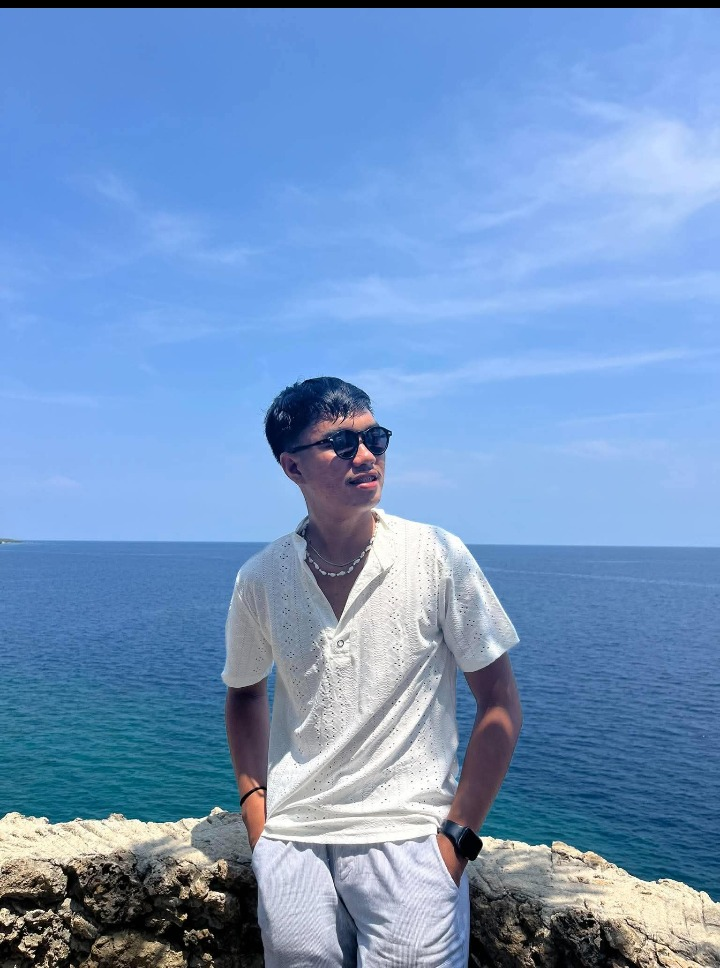

Basketball
Quick decisions, steady practice, and playing as a team.
Student portfolio / 2026
I’m Jeush Daniel Peraren, a second-year college student at Kabankalan Catholic College. I’m exploring the space where clean code, thoughtful programming, and visual layout meet.

A work in progress, by design
As a second-year student at Kabankalan Catholic College, I’m building my foundation in technology through practice. Every new page is a chance to understand how structure, style, and a user’s experience can work together.
Right now, I’m especially interested in coding, programming, and layouting. I like seeing a blank screen become something useful, clear, and uniquely mine.
The things I’m practicing
Writing the building blocks that make an idea work.
Breaking problems into smaller, clearer steps.
Giving information a visual rhythm people can follow.
Life outside the editor
The best creative energy doesn’t always come from a screen. These are the things that keep me moving, noticing, and inspired.
Quick decisions, steady practice, and playing as a team.
Stories, camera angles, and the details that set a mood.
Open roads, new views, and a little time to reset.
Currently exploring
This section will grow with me. For now, it’s a snapshot of the kinds of work I’m ready to practice next.
Practicing semantic HTML, responsive CSS, and the habits that make a page easier to use.
Exploring how typography, spacing, and visual hierarchy can make information feel simple.
A space reserved for the next idea, experiment, or school project worth sharing.
05 / Contact
My contact details are still being set up. For now, these are placeholders ready for my real links before submission.